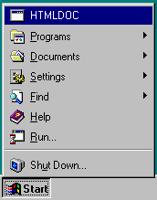
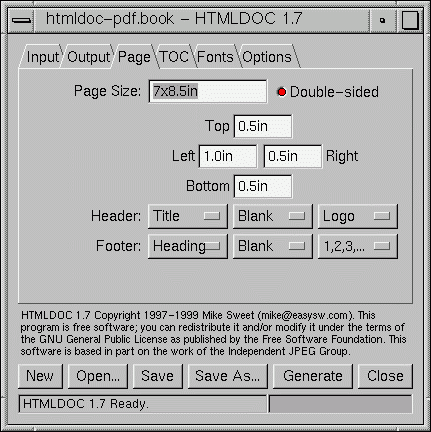
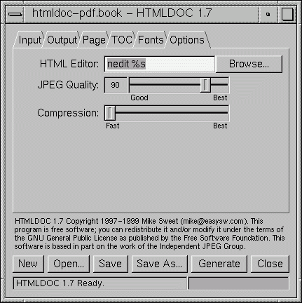

3 - Generating Documents from the GUI
This chapter describes how to generate document files from a given set
of HTML "source" files using the HTMLDOC GUI.
Starting the HTMLDOC GUI
To start the HTMLDOC GUI under UNIX, type:
# htmldoc Enter
To start the HTMLDOC GUI under Windows, choose
HTMLDOC from the Start menu (Figure 1.)
|

Figure 1 - Starting HTMLDOC under Windows
|
The HTMLDOC GUI
The HTMLDOC GUI (Figures 2 through 7) is contained in a single window
showing the input, output, and generation options. At the bottom are buttons
to load, save, and generate documents.
Document File Operations
Starting a New Document
To start a new document, click on the New button.
Opening an Existing Document
To open a document you've saved previously, click on the Open...
button.
Saving the Current Document
To save the current document, click on the Save button. If you have
never saved the document before or would like to save it with a new filename,
click on the Save As... button instead.
Generating Your Document
To generate your document, click on the Generate button. The progress
meter at the bottom of the window will show the progress as each page is
written.
Exiting from the HTMLDOC GUI
To exit from the HTMLDOC GUI, click on the Close button.

Figure 2 - HTMLDOC Window and Input Tab
The Input Tab
Setting the Document Type
Normally HTMLDOC generates indexed documents from your HTML files. To
convert a single "web page" click on the Web Page radio button.
Adding HTML Input Files
Click on the Add... button to add an HTML file to your document.
Deleting HTML Input Files
To remove one or more HTML files from your document, click on the file
(or drag multiple files) in the input file list and then click on the Delete
button. The files are removed from your document but are not deleted
from your disk.
Editing HTML Input Files
To edit one or more HTML files in your document, click on the file (or
drag multiple files) in the input file list and then click on the Edit...
button. By default this starts the nedit editor under UNIX
and the Notepad editor under Windows. See "The Options
Tab" later in this chapter for details on how to change the editor that is
used.
Moving HTML Input Files
To change the order of the input files, click on a file to move (or drag
multiple files) in the input file list and then click on the Move Up
or Move Down button.
Selecting a Logo Image
The logo image is shown on the title page of PostScript and PDF output
files and in the navigation bar of HTML files. To select a logo image file,
click on the Browse button. After the standard file selection dialog
appears, double-click on the desired image file.

Figure 3 - HTMLDOC Output Tab
The Output Tab
Selecting File or Directory Generation
HTMLDOC can generate a single HTML or PostScript file or a series of
files, one per chapter plus the table of contents (index) file. To select single
file output click on the File radio button. To generate multiple files to
a directory click on the Directory radio button.
Selecting an Output File or Directory
The output file is the HTML, PostScript, or PDF file you wish to
generate from your HTML files. To select an output file, click on the
Browse button. After the file selection dialog appears, type the
name of the file you would like to create.
Selecting the Output Format
To select an output format, click on the corresponding Output Type
button. Be careful when generating Level 2 PostScript output, as Level
1 PostScript printers do not support the Level 2 image commands generated
by HTMLDOC (most printers manufactured in the last 4 years are Level
2).
NOTE: Choose Level 2 PostScript output for Level 3 PostScript
printers.
Selecting Grayscale Output
When generating PostScript or PDF files you can choose to convert all images
to grayscale. This is necessary for many Level 1 printers that do not support
color images and can reduce the size of output files considerably.
To select grayscale output, click on the Grayscale button.
Selecting Compressed Output
PDF files are compressed using Flate (a.k.a. ZIP) compression by default. If
you need to view the PDF files produced by HTMLDOC with an older version
of Acrobat Reader (2.x or earlier) click on the Compression toggle button
to turn compression off.
Disabling the Title Page
A title page is generated for your document by default. To turn the title page
off, click on the Title Page toggle button.
Using JPEG Compression
HTMLDOC supports JPEG compression of large images when generating Level
2 PostScript and PDF files. To enable JPEG compression, click on the JPEG
Big Images toggle button. The output quality can be controlled by
dragging the JPEG Quality slider in the options tab.
Once you have enabled JPEG compression, any color image that cannot be
converted to an 8-bit (or less) colormapped image will be JPEG'd. Similarly,
any grayscale image that cannot be represented by 16 (or less) shades will be
JPEG'd.
JPEG compression can dramatically reduce the size of output files, however
with low quality settings the images can look blotchy.
Changing the Navigation Bar Color
To change the color of the navigation bar used in HTML output, type in a color
name in the Bar Color field or click on the Lookup... button to
graphically pick a color.

Figure 4 - HTMLDOC Window and Page Tab
The Page Tab
Selecting a Page Size
The page size option is only available for PostScript and PDF output.
HTMLDOC supports the following standard page size names:
- Letter - 8.5x11in (216x279mm)
- A4 - 8.27x11.69in (210x297mm)
- Universal - 8.27x11in (210x279mm)
To select a custom page size, double-click on the page size text and
enter the page width and length separated by the letter "x". Append the
letters "in" for inches, "mm" for millimeters, or "cm" for centimeters.
Selecting Double-Sided Output
To select double-sided (duplexed) output click on the Double-Sided
toggle button.
NOTE: This option does not select duplexing on the printer, it only
generates pages with the left/right margins swapped on even numbered pages and
forces all chapters (and the table-of-contents) to start on an odd-numbered
page. You must still select duplexing from your application or printer options.
Setting the Page Margins
The left, right, top, and bottom margins can be changed by clicking in the
appropriate text field and entering a new margin. Append the letters "in" for
inches, "mm" for millimeters, or "cm" for centimeters.
Customizing the Header and Footer
To customize the header and footer for the document/body pages, select the
desired text from each of the option buttons. The leftmost option buttons
set the text that is left-justified, while the middle buttons set the text that
is centered and the right buttons set the text that is right-justified.

Figure 5 - HTMLDOC Window and TOC Tab
The Table-Of-Contents Tab
Customizing the Table of Contents
To change the number of header levels listed in the table of contents, or to
turn off table-of-contents generation entirely, click on Table of Contents
chooser and select the number of levels desired.
Numbering Table of Contents Headings
To number the headings in your document, click on the Numbered Headings
toggle button.
Customizing the Header and Footer
To customize the header and footer for the table-of-contents pages, select the
desired text from each of the option buttons. The leftmost option buttons
set the text that is left-justified, while the middle buttons set the text that
is centered and the right buttons set the text that is right-justified.

Figure 6 - HTMLDOC Fonts Tab
The Fonts Tab
The fonts tab contains all of the document font options. The default options
roughly correspond to those used by most browsers.
Changing the Base Font Size
To change the base font size, click on the left arrow buttons to decrease
the font size and the right arrow buttons to increase the font size.
The font size value is in points (there are 72 points per inch).
Changing the Line Spacing
To change the line spacing, click on the left arrow buttons to decrease
the line spacing and the right arrow buttons to increase the line
spacing.
Changing the Body Typeface
The body typeface is the font used for paragraphs and most other text
in a document. To change the body typeface click on the chooser and
pick the desired typeface.
Changing the Heading Typeface
The heading typeface is the font used for headings. To change the
headings typeface click on the chooser and pick the desired typeface.
Changing the Header/Footer Size
To change the header and footer font size, click on the left arrow
buttons to decrease the font size and the right arrow buttons to
increase the font size. The font size value is in points (there are 72
points per inch).
Changing the Header/Footer Typeface
The header/footer typeface is the font used for headers at the top of
the page and footers at the bottom of the page. To change the
header/footer typeface click on the chooser and pick the desired
typeface.

Figure 7 - HTMLDOC Options Tab
The Options Tab
Changing the HTML Editor Command
To change the HTML editor that is used, type in the program name in the
HTML Editor field or click on the Browse... button. The "%s"
is required and is replaced by the file to edit.
NOTE: To use Netscape Communicator as your HTML editor you need to
add the "-edit" option before the "%s".
Changing the JPEG Quality
To change the JPEG quality setting, move the mouse pointer over the slider
knob and drag the slider using the left mouse button. Release the mouse
button when the desired quality is shown.
Changing the Compression Setting
To change the compression setting, move the mouse pointer over the slider
knob and drag the slider using the left mouse button. Release the mouse
button when the desired level is shown.